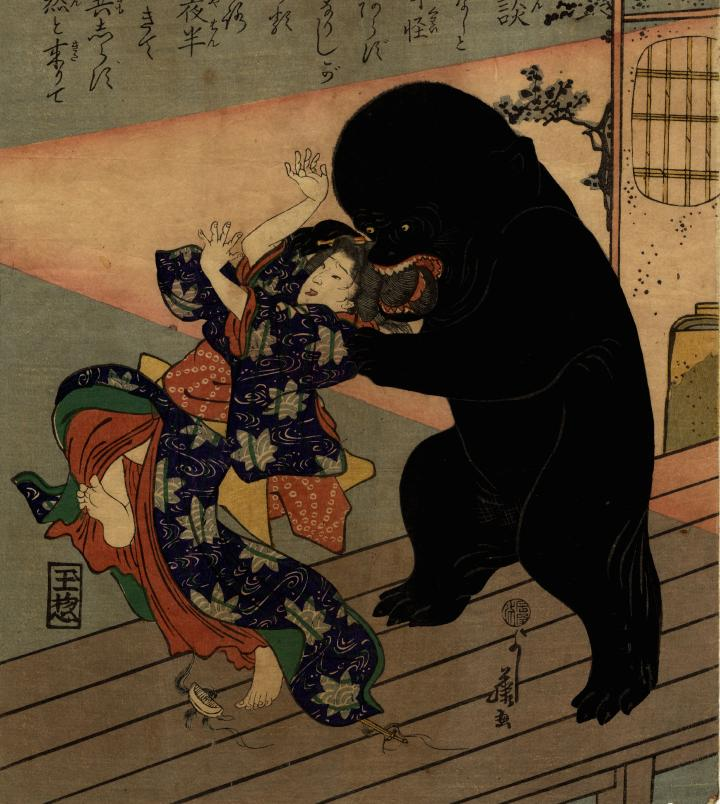

縁側で化物が、後ろから女性の結った髪にかじりついている。化物の体つきはずんぐりとしていて、頭部は丸く大きい。手足は短く指先は獣のようである。全身が黒く、両目と開いた口のみが赤く目立つ。
著作者：よし藤／出典：親書誌：U426_nichibunken_0265：髪切の奇談；カミキリノキダン／日付：2014／資源識別子：U426_nichibunken_0265_0001_0000
Copyright (c)2010- International Research Center for Japanese Studies, Kyoto, Japan. All rights reserved.